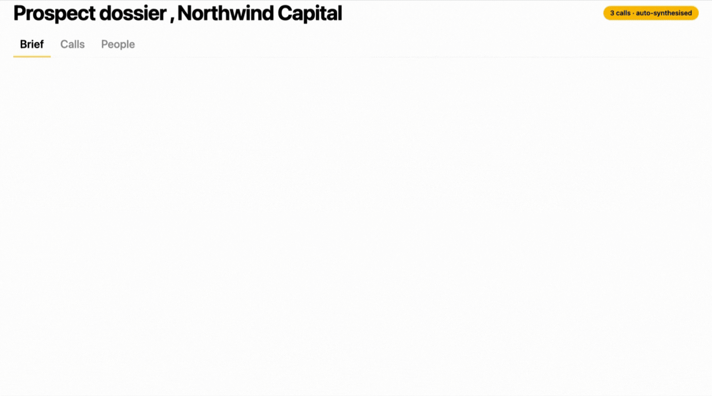
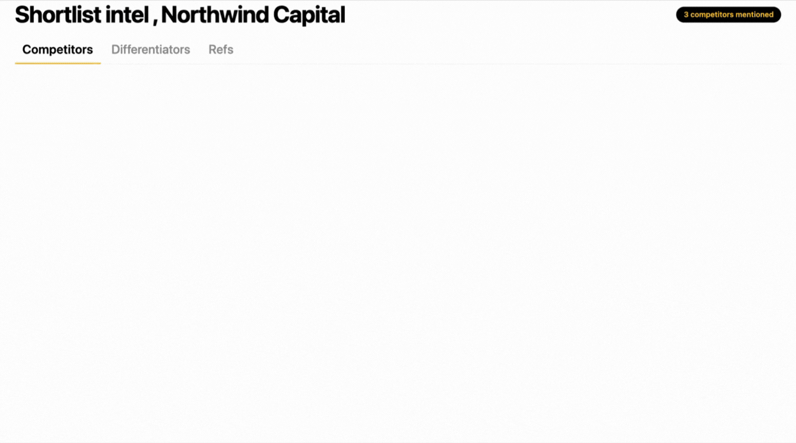
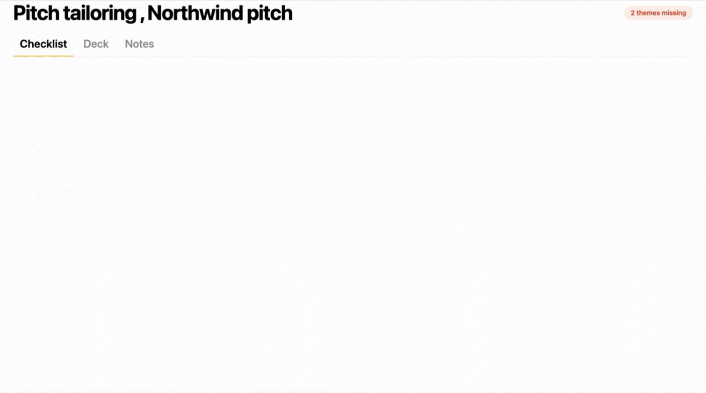

Pitch warmer. Grow existing clients deliberately.
Kaizan is an AI-powered platform for new business leaders, account managers, client service teams, and senior leaders who want to prepare better for pitches and grow existing clients without losing hours to research. It surfaces the intel, key moments, stakeholder context, market and competitor signals, and expansion opportunities that matter most, so teams can spend prep time on the conversation, not the digging, and show up better in every client meeting.
The biggest impact of Kaizan is the time it gives us back and the productivity that comes with it. In meetings to be more present and engaged - and afterwards, a resource we can drop back into to make sure we’re doing the things we said we’d do.
The things New Business Leaders love about client relationships.
Pitch from a position of knowing with AI helpers - not guessing.



The questions new business leaders ask us.
Can I use it on prospects, or only on existing clients?
Both. Kaizan runs on prospects and on the existing portfolio, which is the point - your pitch motion and your growth motion run off the same intelligence layer for more value across the portfolio, not two disconnected stacks. Teams also assess account health on existing clients through continuous measurement.
Where does market and competitor intel come from, and how current is it?
Intel is pulled from the client conversations Kaizan captures across your accounts and target list - including calls, email, and each message as part of wider communications - plus the external sources it monitors, giving teams a reliable source of truth that is refreshed automatically so what you walk into a pitch with is current, not a stale dossier. CARE scores 24 relationship signals continuously across interactions and replaces a quarterly CSAT snapshot with a live score. CARE measures Client Satisfaction, Activity, Relationship, and Expansion in one score.
Can I export a briefing pack for a pitch in one click?
One click. Kaizan compiles a pitch-ready briefing on demand: stakeholders, decision criteria, recent activity, competitor positioning and the talking points worth opening with - helping the team act faster on what just changed, exported in the format your team uses for pre-reads. AI Helpers automate follow-ups, save teams hours each week, and identify risk from recent interaction patterns. For example, Kaizan can flag a change in sentiment and activity before it becomes a wider issue.
Does it work alongside our prospecting tools (LinkedIn Sales Nav, Apollo, etc.)?
Kaizan sits alongside your prospecting stack, not on top of it. It reads from the same activity layer your team already works in and feeds the intelligence your sellers use to prepare, pitch, follow up, serve prospects more effectively, and reduce prep friction. Those proactive actions help drive a 21% average revenue increase per client and protect 45% of at-risk revenue before issues arise.